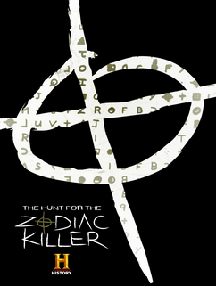
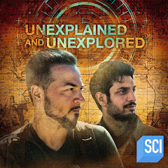
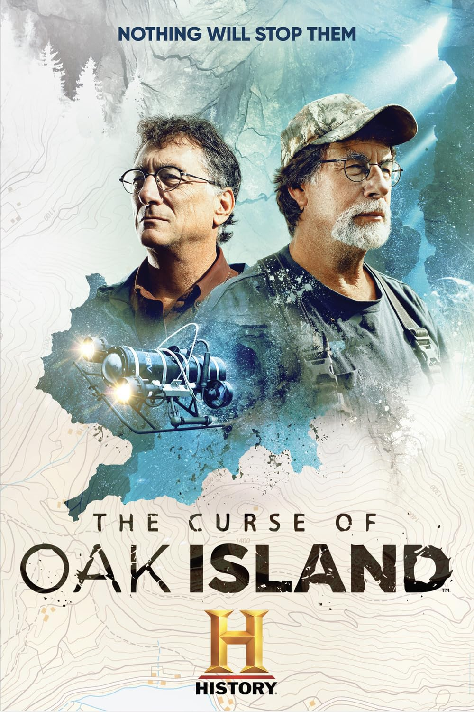

We didn't crack the infamous Z340 cipher in s1e1-5, but team member David Oranchak did it three years later.

Incredibly, in the early years of the American Republic, the head of the Army and governor of the Louisiana Territory was a Spanish spy. In s1e4, we investigated his secret communications and reported our method in this paper.

In s1e13, Nada Aldarrab and I took a look at an enciphered map.